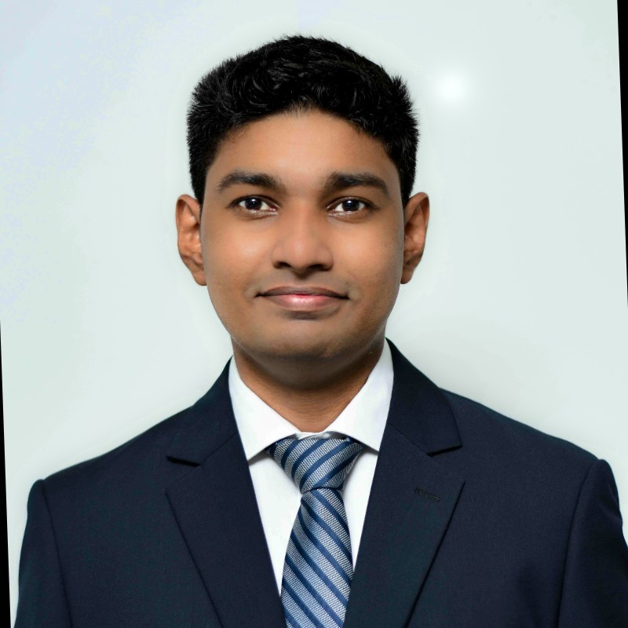

Irshan Sudar
Business Operations Professional | Product Manager | Project Coordinator | Data & Finance Enthusiast
Profile
Project & Product Management Professional with a BSc (Hons) in Engineering and 2+ years’ experience in operations, cross-functional
project coordination, and product launches. Proficient in Agile frameworks and tools like ClickUp and Slack, with hands-on involvement
in sprint planning, issue tracking, and stakeholder communication. Skilled in managing project timelines, maintaining project
documentation, and supporting process improvements across supply chain and product development workflows. Eager to grow in
software development lifecycle (SDLC) projects and contribute to tech-forward teams
Work experience
Peace Lily Lanka Pvt Ltd
Operations Manager (Acting)
- Supported cross-functional project coordination, reporting, and interdepartmental communication using ClickUp and Slack.
- Created and updated project documentation, tracked progress, and ensured timelines aligned with stakeholder expectations.
- Participated in Agile ceremonies and contributed to continuous improvement initiatives within production and supply teams.
Factory Manager (Acting)
- Developed and monitored factory project plans and schedules.
- Managed production deliverables, issue tracking, and supplier negotiations, achieving a 45% cost reduction.
- Documented and tracked operational risks and project blockers for resolution.
Junior Product Manager / Product Manager
- Delivered Australia’s award-winning hybrid mattress project; oversaw planning, supplier alignment, and risk mitigation.
- Maintained project timelines and facilitated updates between development and marketing teams.
- Collaborated with internal and external teams across AU, NZ, and US markets; supported planning and stakeholder communication.
- Tracked deliverables in ClickUp and conducted competitor analysis to guide launch strategy.
Product Design Engineer
- Designed and optimized new products using CAD/FEA.
- Collaborated with cross-functional teams to ensure quality and cost-effectiveness.
Additional experience
- Mechanical Engineering Intern, Ceylon Petroleum Corporation (2021): Gained deep exposure to industrial operations, maintenance, and process optimization.
- Math Tutor & Instructor: Demonstrated strong communication and analytical skills.
Educational Qualifications
- BSc (Hons) Engineering in Mechanical Engineering, CINEC Campus
Projects
- Raw Material Collection Route Optimization.
- Setting Up Fiber Line Internet Connection Infrastructure
- Hybrid Mattress Development.
- Timber Bed Base Development
Skills
- Project Management: Agile Methodologies, ClickUp, Slack, MS Project, Trello
- Product Management: Product Lifecycle Management, Market Research, Competitor Analysis
- Data Analysis: Excel, Google Sheets, Basic SQL
- Technical Skills: CAD (SolidWorks), FEA (ANSYS), Basic Python
- Soft Skills: Communication, Team Collaboration, Problem-Solving, Time Management
Certificates
- Certificate of Achievement_CAPM Exam Preparation Training
- International English Language Testing System Certificate
- Microsoft AI Product Manager Professional Certificate
- Google Project Management: Professional Certificate
- Foundations of Project Management
- Build AI Agents and Automate Workflows with n8n
Awards
- Best Dissertation in Bachelor of Science Honours in Engineering in Mechanical